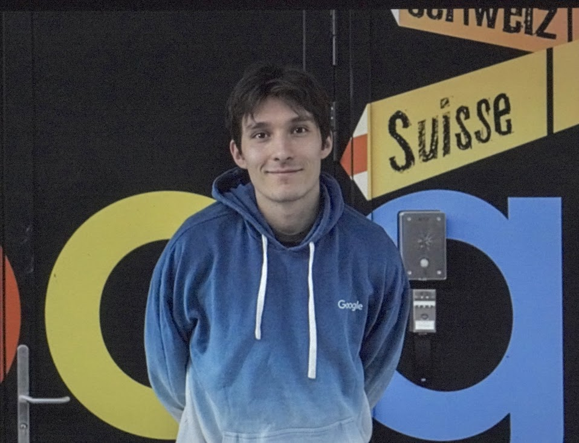
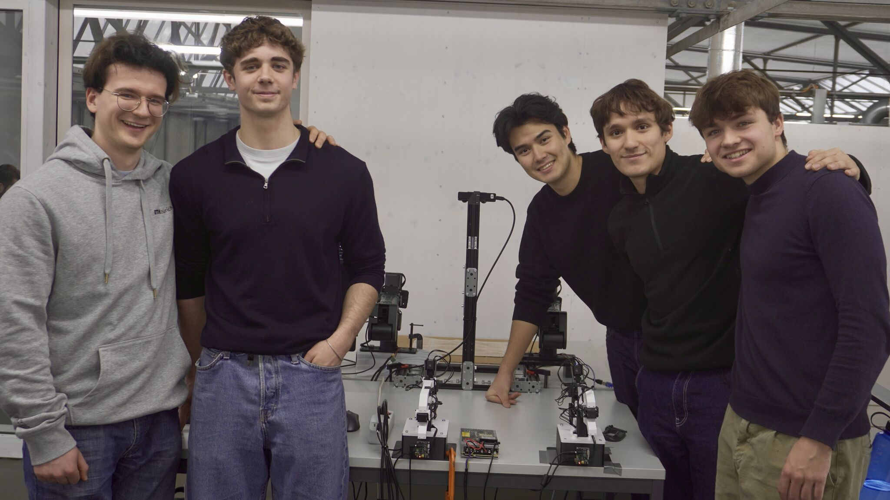
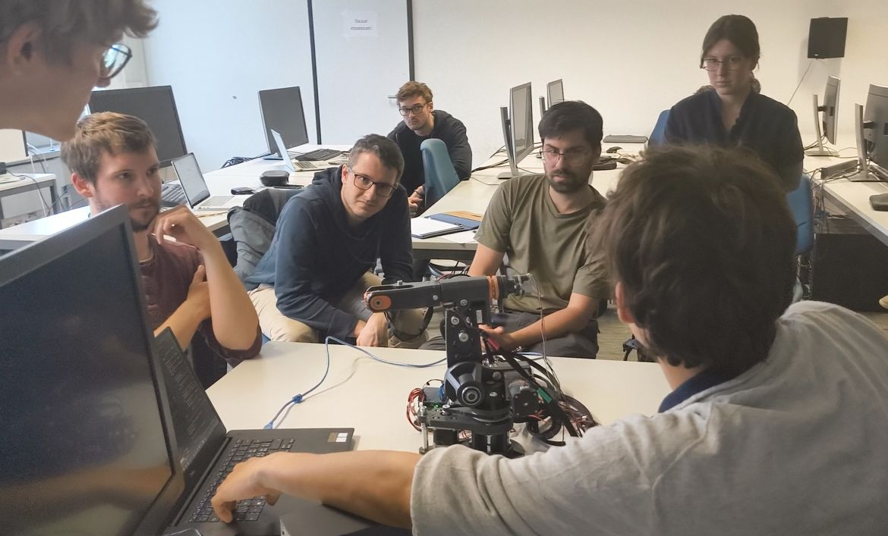
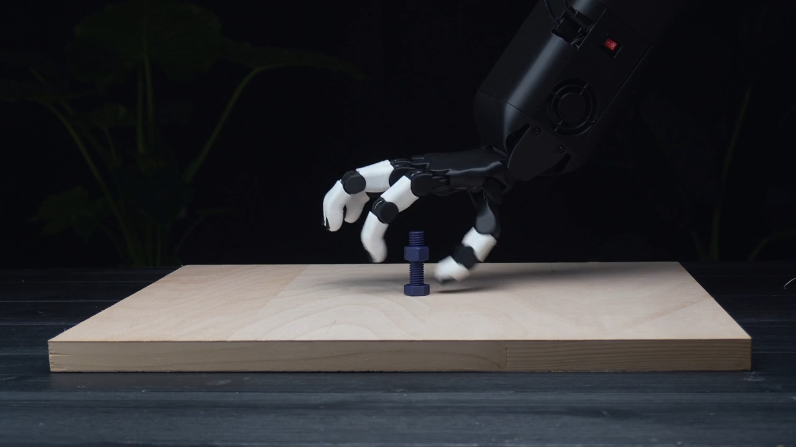
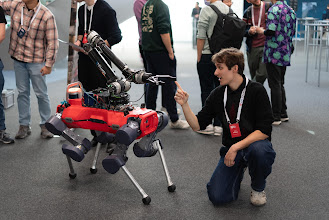
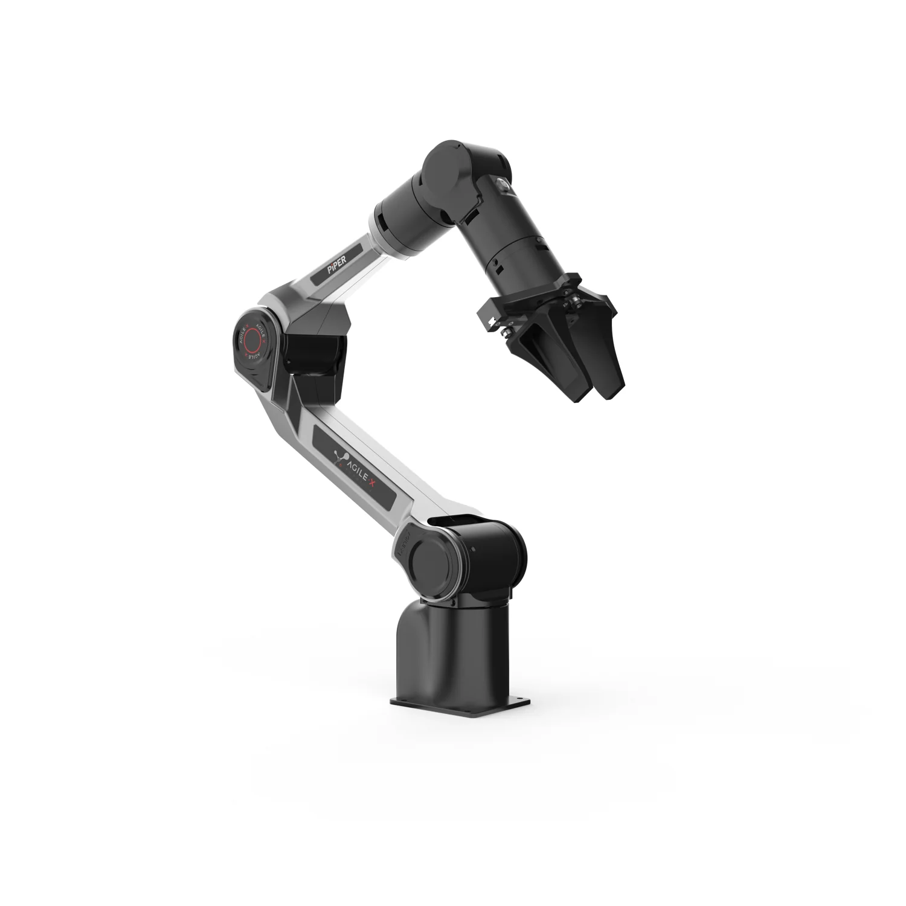
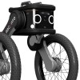
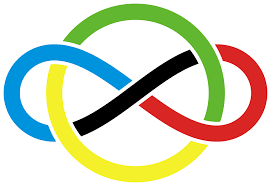

Half-Humanoid Manipulation & Teleoperation Setup with Humanoid Hands
TL;DR: Building a half-humanoid manipulation and teleoperation setup equipped with dexterous humanoid hands, targeting dexterous long-horizon tasks.

Robot Learning · Mechatronics · ETH Zürich
I am an undergraduate at ETH Zürich, studying Electrical Engineering, particularly passionate about mechatronics and robot learning.
I'm currently leading an independent research team of 25 undergrad and grad students building new robotic setups, replicating frontier research and developing our own Video-Action models. (See more of what we do or join us!)
When I'm not building robots, you can find me playing football, guitar, learning a new language or learning everything I can doing internships at cool robotic startups!
Email: alejo [at] student [dot] ethz [dot] ch
Born 2/8/2005 🇨🇴 · lived in 🇺🇸 🇨🇦 🇩🇪 🇨🇭
Fluent: 🇬🇧 English · 🇪🇸 Spanish · 🇫🇷 French · 🇩🇪 German · 🇨🇭 Swiss German
Learning: 🇮🇹 Italian · 🇷🇺 Russian
Selected work
TL;DR: Building a half-humanoid manipulation and teleoperation setup equipped with dexterous humanoid hands, targeting dexterous long-horizon tasks.
Project lead · team of 20 students
TL;DR: Led a 20-student team finetuning ACT (Action Chunking with Transformers) on a bimanual robot setup to autonomously fold towels — a classic long-horizon manipulation benchmark.


Supervisor: Dr. Phillip Meyer
TL;DR: Designed and built a 6-degree-of-freedom robotic arm controlled via IMU — translating human wrist and arm orientation directly into robot joint commands for intuitive teleoperation.



Grade 6/6 — amongst the best theses in the Canton of Zürich
TL;DR: High school end-thesis: built a 4-DOF robotic arm and implemented inverse kinematics from first principles — awarded the highest possible grade and recognised among the top theses canton-wide.
TL;DR: Implemented a real-time, closed-form geometric IK solver for a 2-DOF planar robotic linkage — first foray into robotics kinematics.
Robotic setups I've worked with





Background


Recognition

IMO Qualification — 11th overall, Colombia.